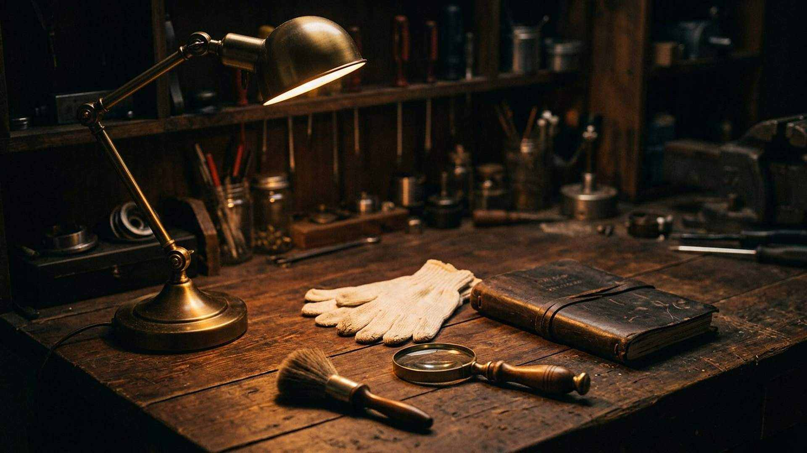

À propos
Pourquoi ce musée
Parce que la question « d’où vient tout cela ? » mérite mieux qu’un slogan, dans un sens comme dans l’autre.
« Ses qualités invisibles se voient clairement par les choses faites. »Romains 1:20
Ce site est une démonstration, assumée comme telle : il soutient que la création et les prophéties de la Bible portent l’empreinte d’une intelligence supérieure — Jéhovah.
Mais une démonstration n’a de force que si elle est honnête. C’est pourquoi chaque affirmation est séparée en trois niveaux, chaque chiffre porte sa source, chaque interprétation est signalée comme telle, et chaque objection sérieuse est présentée avant d’être discutée. Quand les spécialistes ne sont pas d’accord, le site le dit.
Le visiteur n’est pas invité à croire sur parole, mais à vérifier : ouvrir les fiches des musées, lire les articles cités, refaire les calculs des calculateurs. La conclusion, s’il y en a une, lui appartient.
Images : toutes les images de ce site sont des reconstitutions numériques photoréalistes, créées pour l’illustration — et non des photographies documentaires. Les objets réels sont désignés par leur fiche de musée, avec numéro d’inventaire.